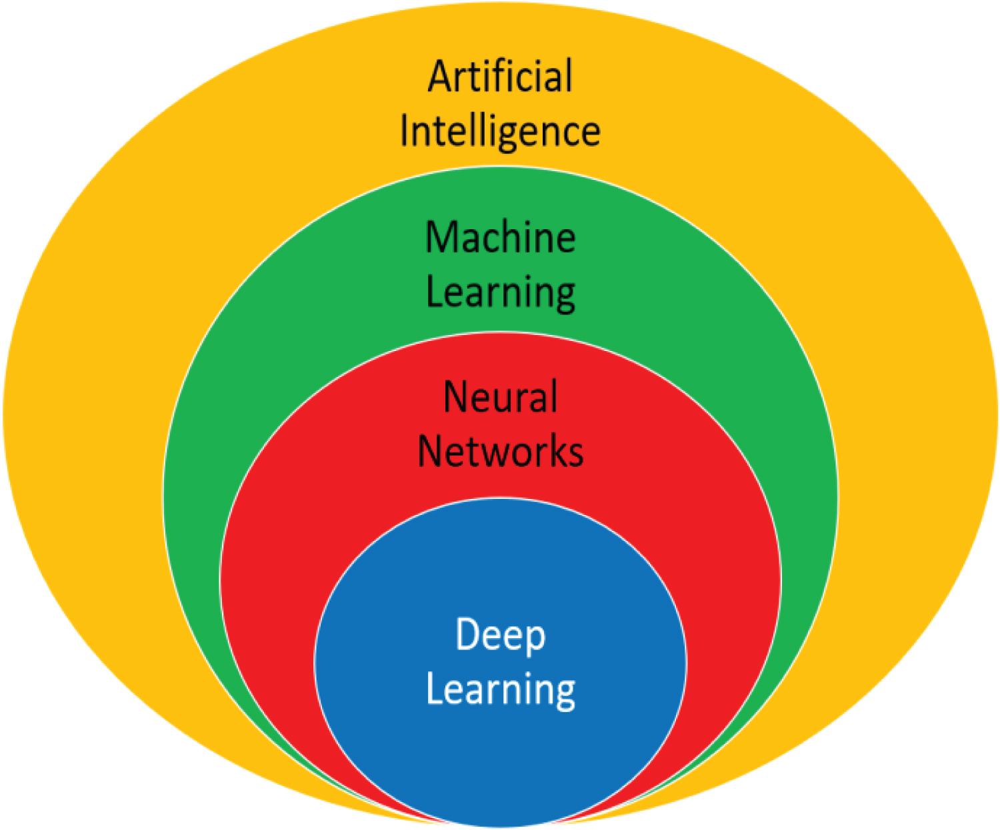
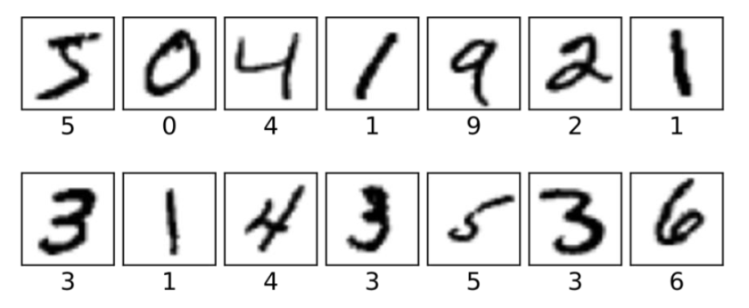

Introduction
Introduction to machine learning
What is AI?
Artificial Intelligent (AI) is a field of computer science and mathematics that brings together a set of algorithmic techniques and theories for creating machines that mimic human intelligence.
Question:
How do Artificial Intelligent (AI) and machine learning really work?
How do they learn from our behaviors, preferences, and interactions ?
The aim of AI is to simulate human intelligence, and in particular to learn a wide range of tasks. There are two possible ways of learning :
Rote learning: explicitly memorizing all possible examples to play them back
Generalizing learning: extract implicit rules from a large number of examples to reapply them to new situations never encountered before
Rote learning is relatively easy for a machine, as long as the examples are available. On the other hand, learning by generalization is difficult, as it requires the extraction of rules that are not explicitly mentioned in the examples

Relationship between AI, ML, Neural Networks, and Deep Learning (Sk 2020)
What is machine learning?
Machine learning is a sub-domain of AI, which involves learning from experience or from a database of implicit rules to answer to a given problem. This field focuses on the statistical analysis of training data. This field focuses on the statistical analysis of training data.
Generally speaking, machine learning algorithms are divided into several phases:
Training phase (or learning phase):
The chosen model is subjected to a large number of significant examples
The system then seeks to learn implicit rules based on this data (called training data)
Inference phase:
- The trained model can be used on new inputs
The training phase generally precedes the use of the model, although some systems continue to learn indefinitely if they have feedback on the results (this is called on-line learning).
Inputs provided during the inference phase can be processed even if they were not seen by the model during the learning phase.
Type of machine learning
Machine learning uses different types of learning, with supervised learning and unsupervised learning playing a prominent role.
Deep learning is a set of techniques that use neural networks to solve complex problems.
Reinforcement learning consists in learning by interacting with the agent’s environment.
Supervised and unsupervised learning
Supervised learning
We have the labeled training data \((x_{i},y_{i})_{i=1,···,n}\), the n inputs \(x_{i}\) and the associated target outputs \(y_{i}\). The aim is to train the chosen model so that it can correctly predict the output for unlabeled inputs.

Supervised learning is generally used for regression or classification:
Regression is used when the output to be predicted can take continuous values
Classification is the task of choosing a class (value) from all those possible.
Classic supervised learning algorithms include linear regression, nearest neighbor algorithms, discriminant factor analysis, logistic regression, neural networks, decision trees, random forests and support vector machines.
Unsupervised learning
We therefore have input data for which we don’t know the associated output. The data set is therefore \((x_{i})_{i=1,···,n}\) and the aim of the system is to identify features common to the training data.
Unsupervised learning is mainly composed of clustering algorithms. These algorithms seek to separate the input data into a given number of groups. Each element in the group must have characteristics close to those of elements in the same group, but relatively distant from those of other groups.
The most common unsupervised learning algorithms are the k-means algorithm, hierarchical ascending classification, principal component analysis, DBSCAN, singular value decomposition and some neural networks.